In this first code chunk I am "wrangling" the data so that we can calculate an the island effect size.
## Joining, by = "treatment"Do the same thing for N. (Side note: I'm not sure these figures are going to work for N but we can think of othre ways)
# First I take our full data set and filter it so we only have data for interspace
inspN <- soilN %>%
filter(plant == "INSP") %>%
select(plant, treatment, ring, hf_mgNgsoil) %>%
group_by(treatment) %>%
summarize(insp_mean=mean(hf_mgNgsoil)) # Here I am taking a mean of the SOC concentration across depths (mgC/ g Soil)
# Next I want to create a data frame of all the plant cover types paired with the INSP data
coverN <- soilN %>%
filter(plant != "INSP") %>% # The ! means "not equal to" insp
select(plant, treatment, ring, hf_mgNgsoil) %>%
group_by(plant, treatment) %>%
summarize(mean_N=mean(na.omit(hf_mgNgsoil))) %>% # here I'm calculating means again
left_join(inspN) %>% # left join command will merge our insp data frame from above to this new data frame
mutate(island = mean_N - insp_mean) %>% # then we can calculate an "island" number by subtracting the mean insp soc concentration from the plant soc conecentration
mutate(effect_size = (island/mean_N)*100) # Finally I am creating an "effect size" by dividing the "island" value by the original concentration of plant soc which should make it a more relative term that is comparable between plant types. I multiplied by 100 just so the values are easier to see## Joining, by = "treatment"The simplest format I can think of for these balloon plots. The balloons are scaled by the "size" term, which in the first is "island" (mg C/g soil) and in the second is "effect size" (island/plant SOC) 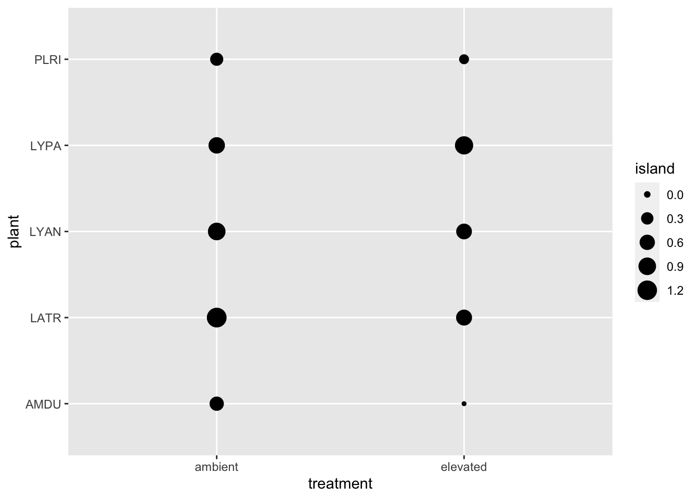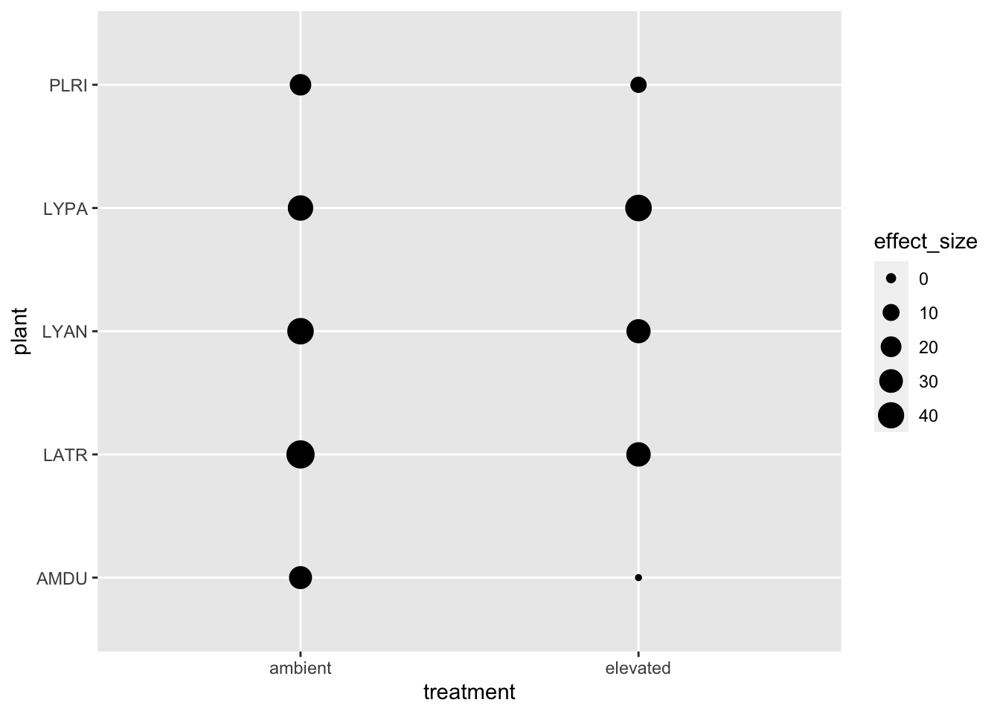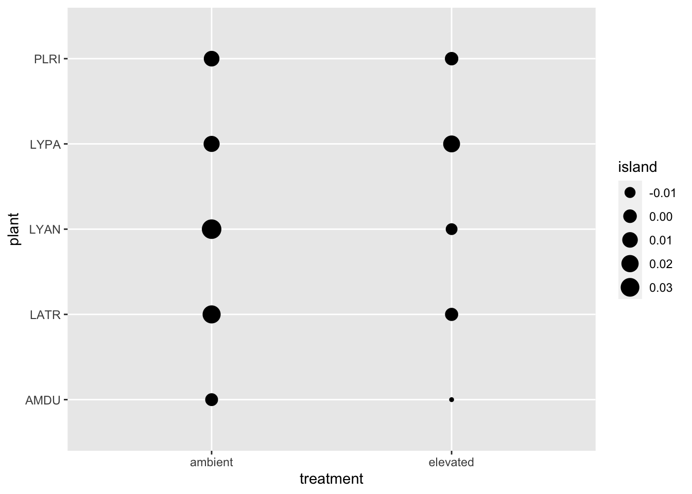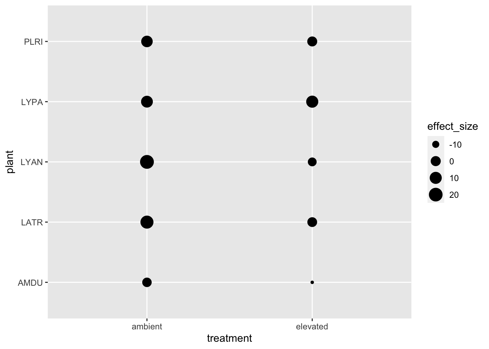
If we make a few changes to this basic plot, we can improve the visuals. 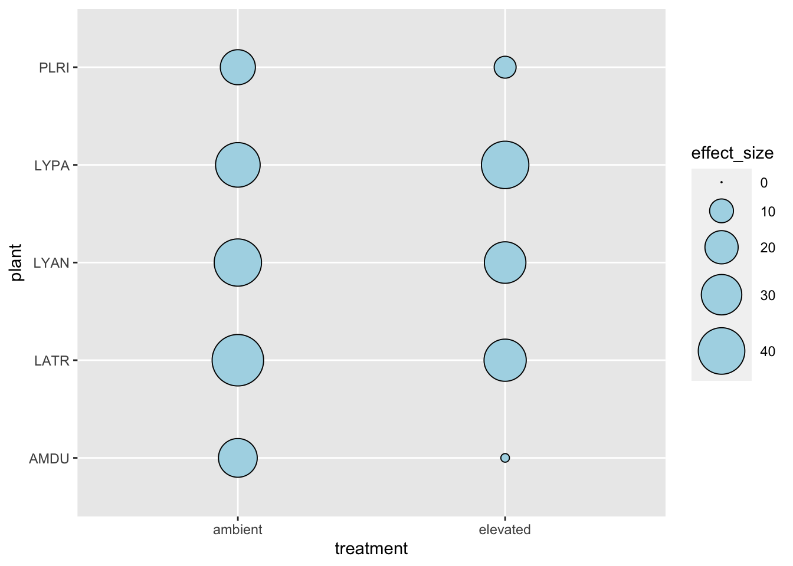
What would the plot look like if you switched the x and y axes? Which one do you think is easier to understand? 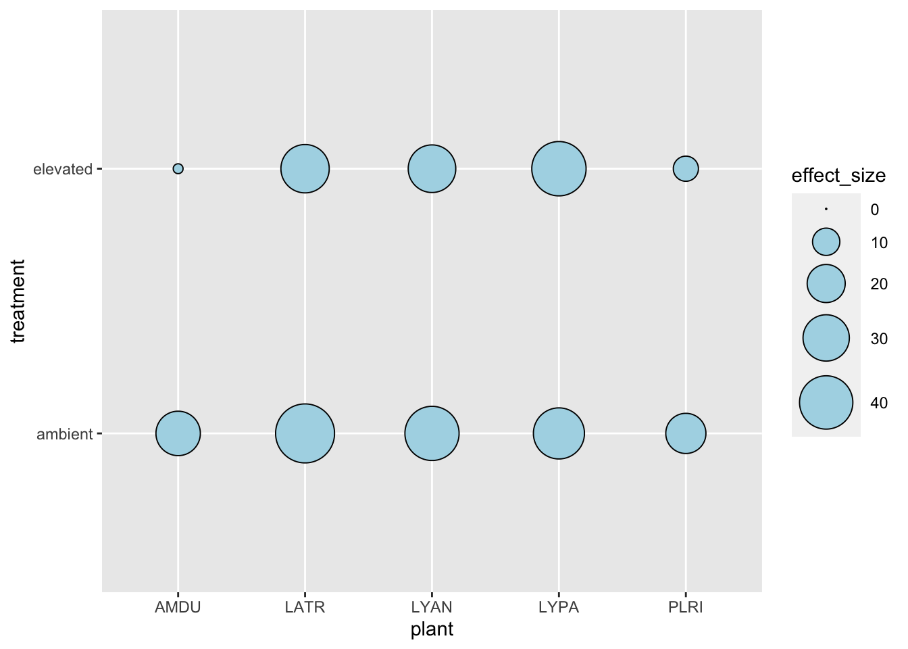
Taking away some of the background noise by setting a bunch of elements to "blank" 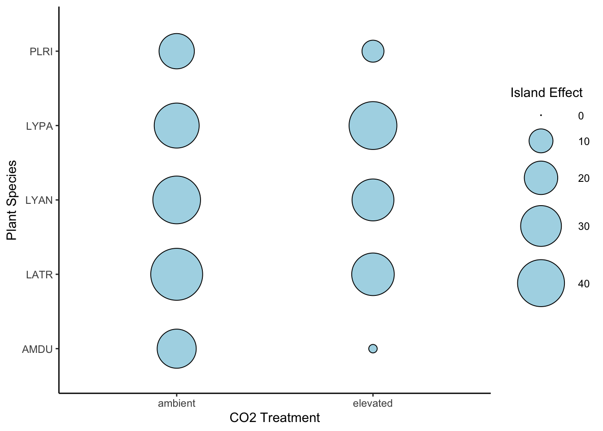
We can use a color gradient to change the fill color proportionally to effect_size (This is just an example, not very refined) 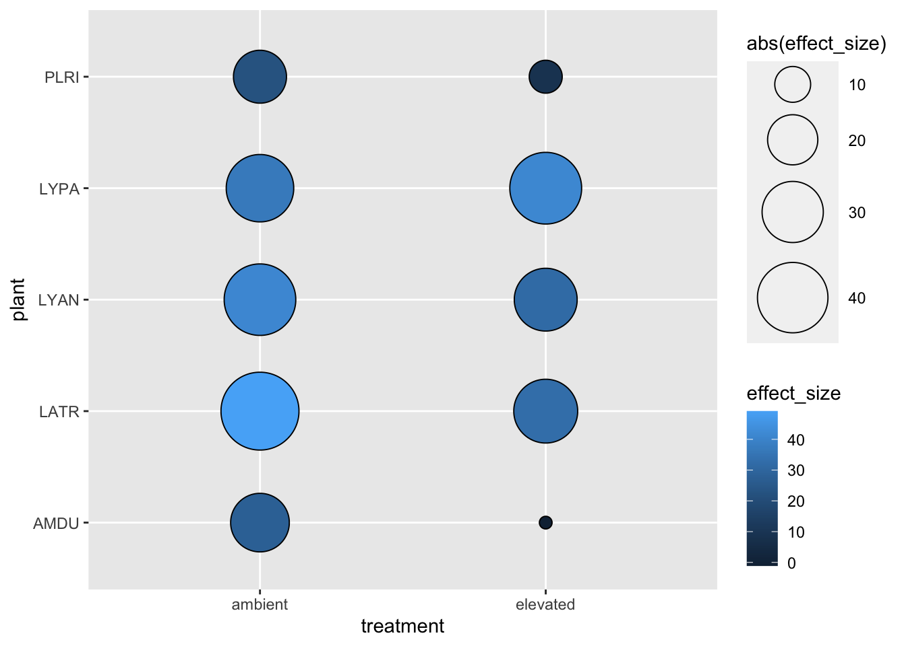
Two of our cover types go from a positive Nitrogen island effect to a negative one. This actually makes visualizing the data much harder butt one way we could do it is to color the negative effects one way and the positive colors another. It is very striking to see the N islands dissapear and actually reverse under eCO2! 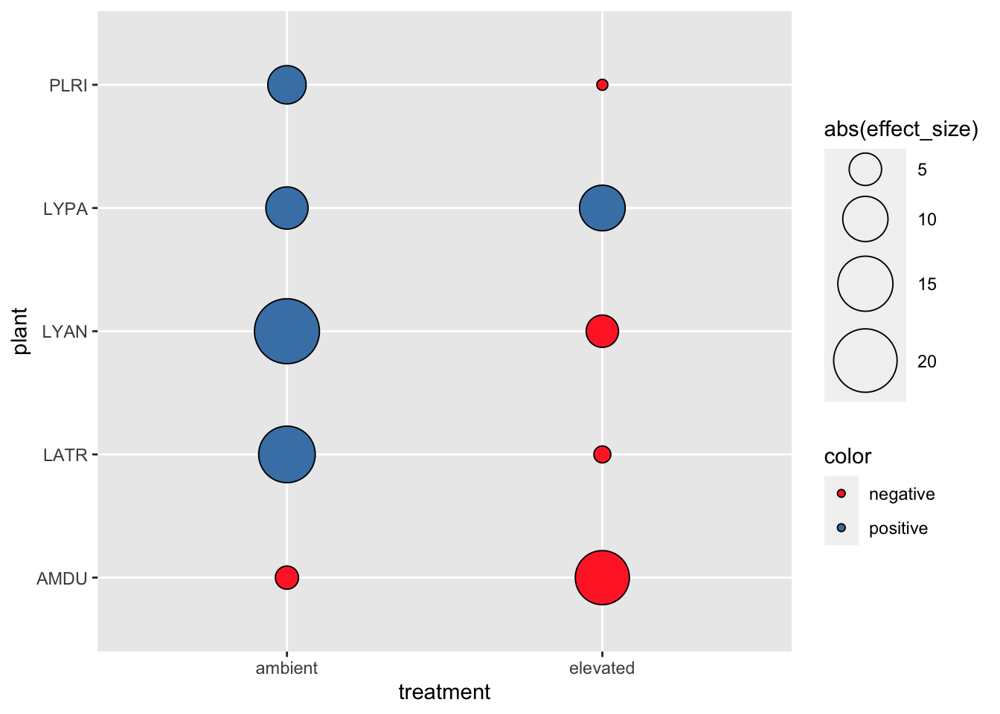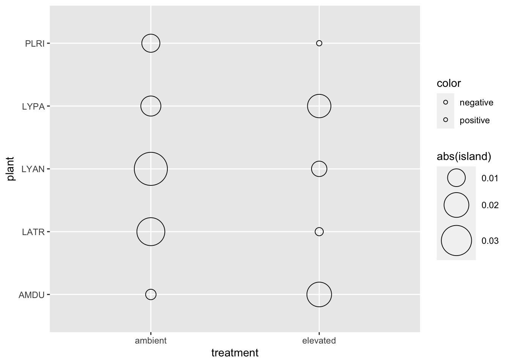
I tried playing around with some different continuous axes and scaling the baloons by SOC. Can you think of any other ways we could look at the data by changing variables in these plots? 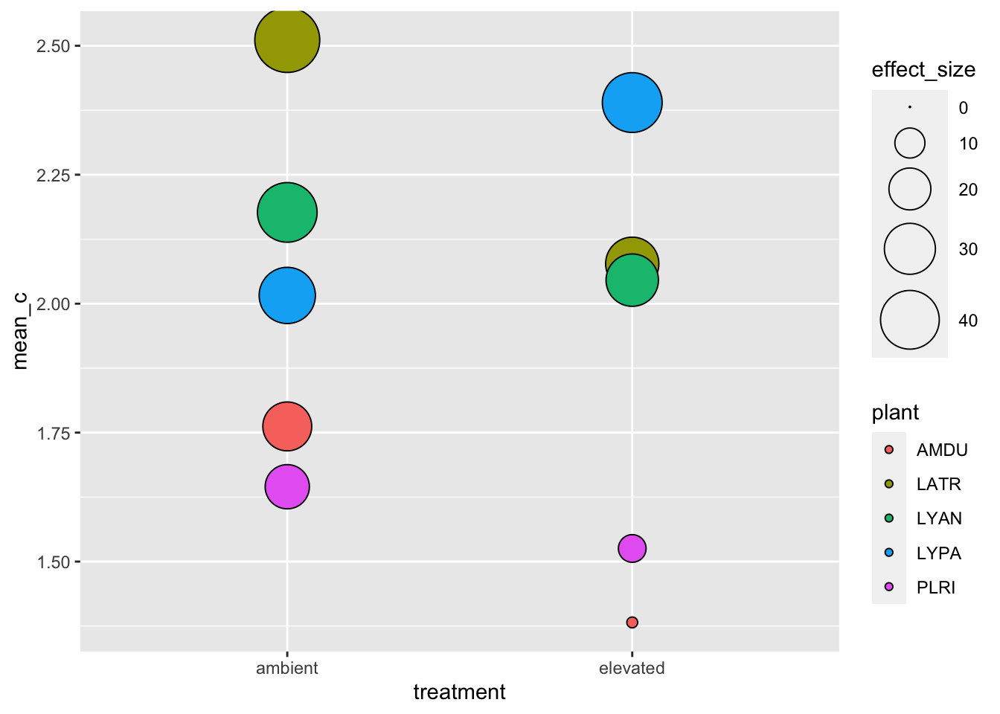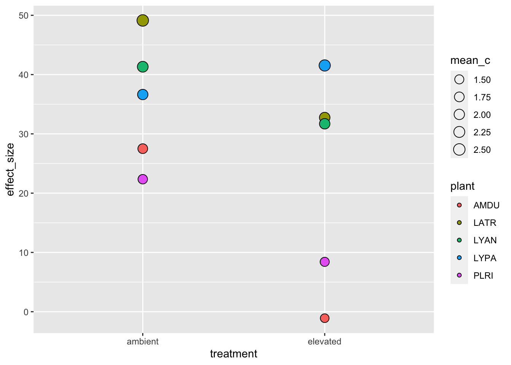
Just out of curiority, I wanted to see happens if we only look at this for the top 20 cm
## Joining, by = "treatment"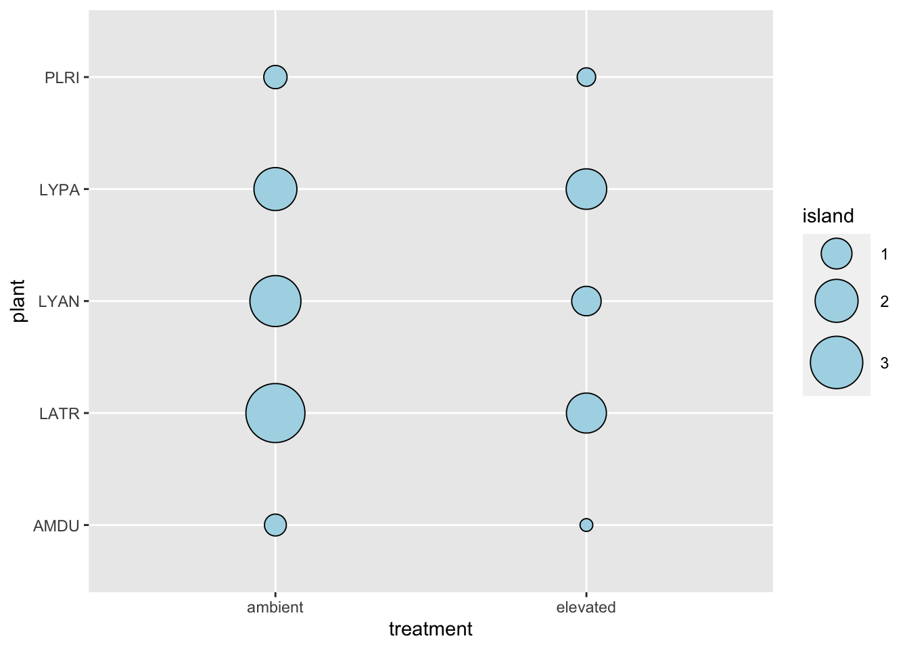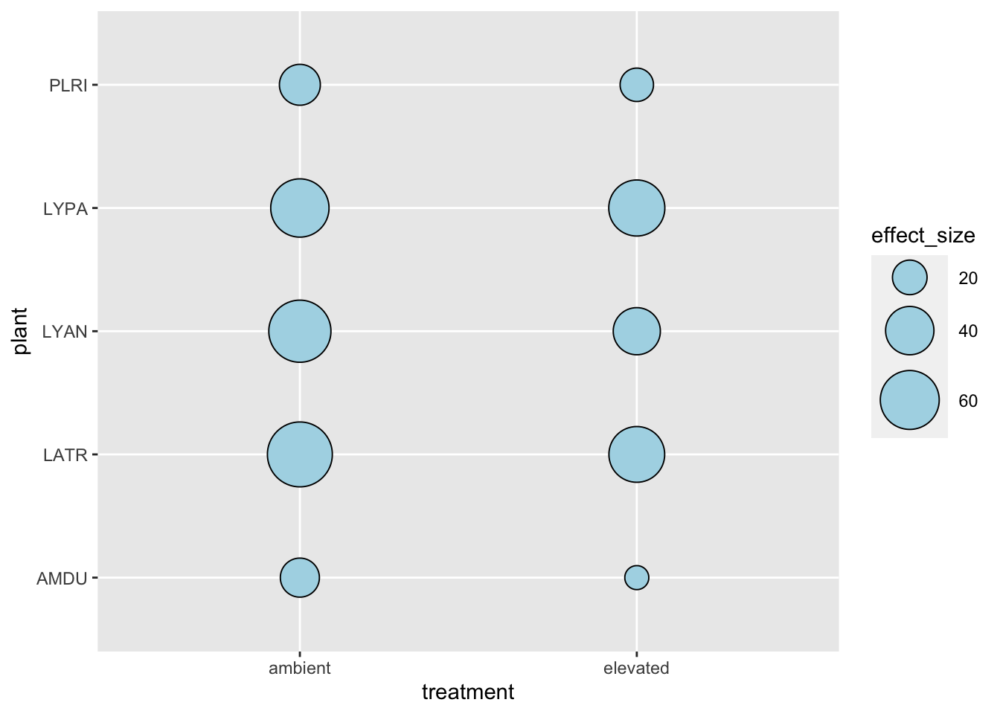
inspN.20 <- soilN %>%
filter(plant == "INSP") %>%
filter(depth == "10") %>%
select(plant, treatment, ring, hf_mgNgsoil) %>%
group_by(treatment) %>%
summarize(insp_mean=mean(hf_mgNgsoil))
coverN.20 <- soilN %>%
filter(plant != "INSP") %>%
filter(depth == "10") %>%
select(plant, treatment, ring, hf_mgNgsoil) %>%
group_by(plant, treatment) %>%
summarize(mean_N=mean(na.omit(mgNgsoil))) %>%
left_join(inspN.20) %>%
mutate(island = mean_N - insp_mean) %>%
mutate(effect_size = (island/mean_N)*100)
# Island effect in units of mg C/ g soil
ggplot(coverN.20, aes(x=treatment, y=plant)) +
geom_point(aes(size=island), shape=21, color="black", fill="lightblue") +
scale_size_area(max_size=15)
ggplot(coverN.20, aes(x=treatment, y=plant)) +
geom_point(aes(size=effect_size), shape=21, color="black", fill="lightblue") +
scale_size_area(max_size=15)
# I wonder if we could stack these plots and show the smaller island inside the larger one?